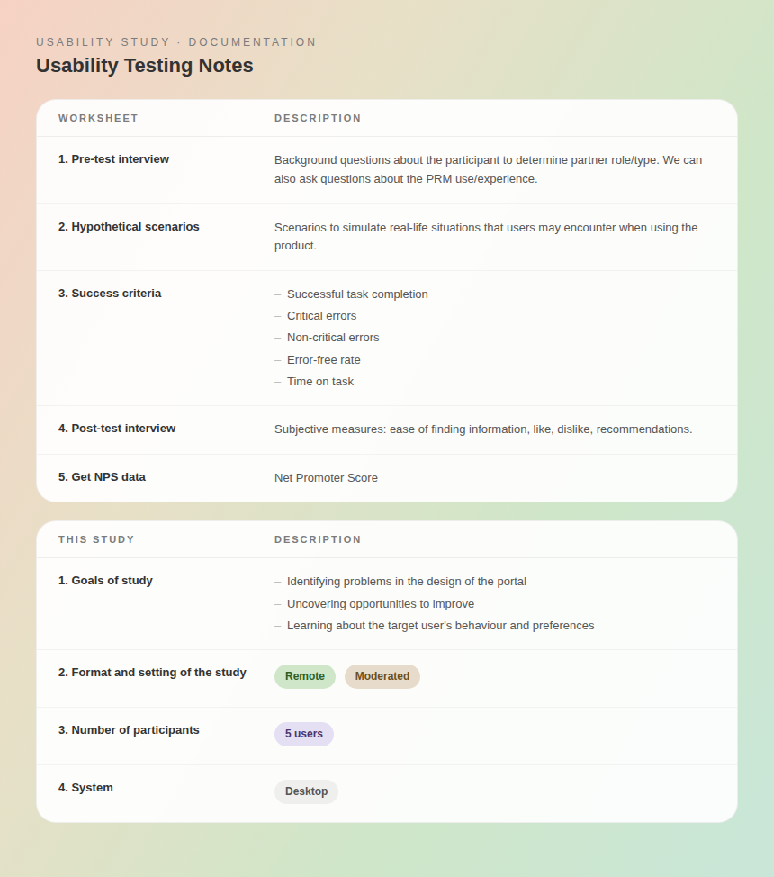
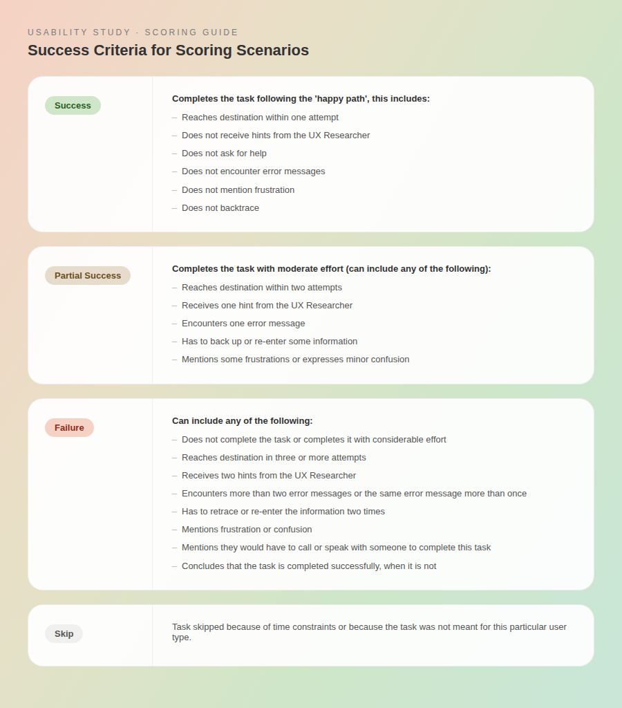
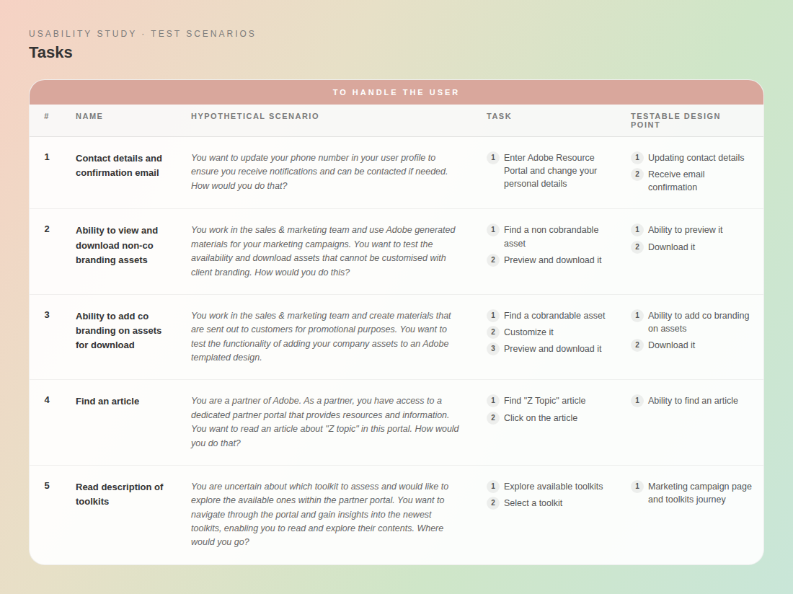
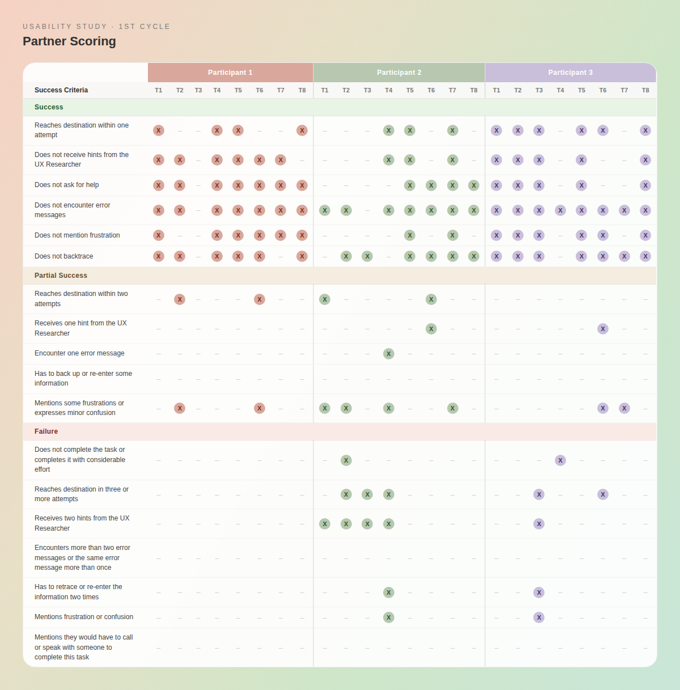
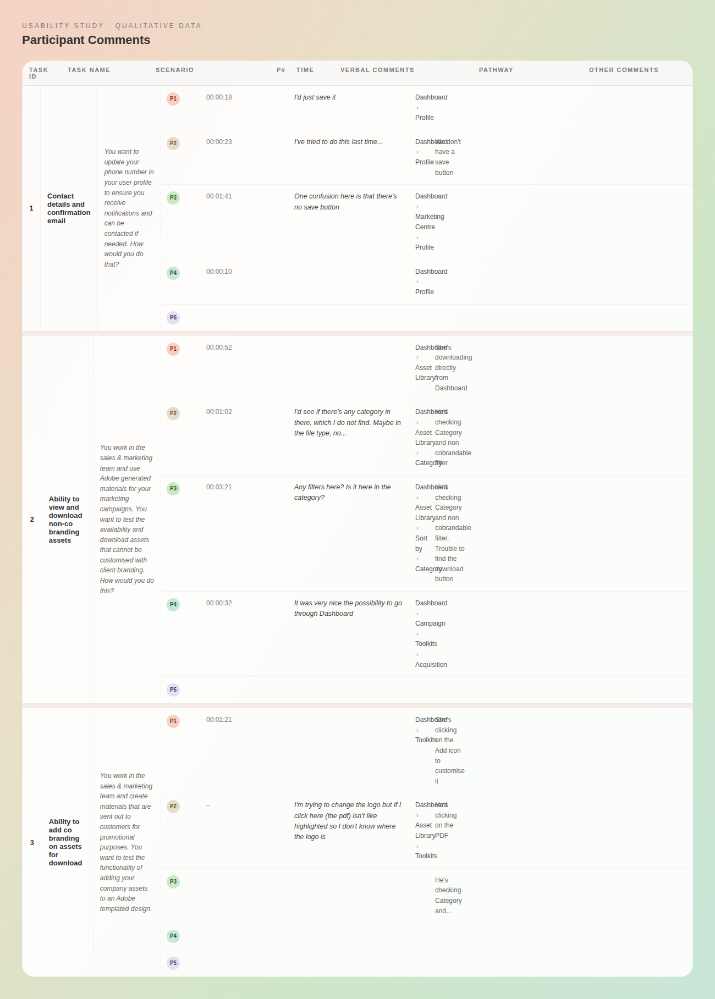
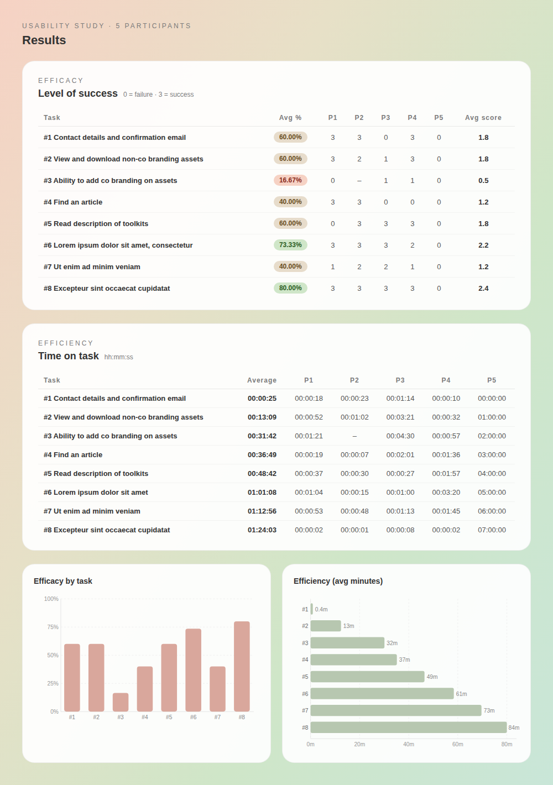

UX research & usability testing for data migration
Redesigning partner management through iterative UX research and usability testing — from identifying critical failures to implementing changes that measurably improved task completion, efficiency, and partner confidence.

Overview
Adobe was migrating partner data from a legacy system into a new centralised platform (PRM) tool used by external partners across sales, marketing, and account management. Partners needed to complete real tasks on the new platform, and early signs suggested the experience was creating friction rather than removing it.
I was brought in to lead the end-to-end UX research process: scoping the study, recruiting participants, moderating sessions, analysing findings, and translating those findings into design recommendations that I then implemented directly.
Why Usability Testing
With the platform already in development, there was no time for exploratory research. I chose remote moderated usability testing because it gave us direct observation of real behaviour.
I designed 8 task-based scenarios drawn from the most common partner workflows, and defined success criteria. I also included time-on-task measurement and post-test questions to capture both quantitative efficiency data and qualitative confidence signals.
Methods
My UX Process
- Discovery & Research – Conducted qualitative interviews to understand partner workflows and uncover usability challenges.
- Usability Testing – Ran iterative usability tests, gathering feedback at each stage of the design.
- Design Iteration – Implemented improvements based on test findings, refining navigation, workflows, and content hierarchy.
- Validation & Launch – Conducted a final round of testing before launch.
My Role
I led the end-to-end research process, from scoping objectives to recruiting participants, executing interviews and usability testing, and synthesising findings into recommendations.
I acted as a bridge between the PRM vendor and Adobe, aligning technical constraints with user-facing needs.
Usability Testing Process
Overview
For this usability test, I conducted two cycles. I recruited five participants for the first cycle and defined the structure of the sessions.
The tests were conducted remotely, moderated by me, with an observer. We established success criteria and post-test questions.
A participation agreement was drafted and shared with all participants prior to the test, ensuring informed consent. Additionally, we ran an internal pilot test to refine the process before launching the study.

Success Criteria
I designed a set of twelve tasks to comprehensively evaluate the PRM. The tasks were carefully selected to cover areas frequently discussed among stakeholders, ensuring that their main concerns were directly assessed.
In addition, I incorporated potential pain points that had not yet been raised but were likely to affect the user experience.

Tasks
The list of tasks participants had to complete during the test.

Partner Scoring
The rating scale was developed for each task and for each individual participant, based on the defined success criteria. In this context, the ratings are as follows:
- Complete Success = 3
- Partial Success = 2
- Success with Failure = 1
- Failure = 0

Participant Comments
Participant comments were carefully considered, ranging from body language and posture to verbal cues such as expressions like “I guess” or “I reckon” versus more confident statements like “I am sure that.”
Additionally, we recorded the time each participant took to complete each task, providing further insight into task difficulty and user performance.

Results
The Cycle 1 results were clear, and in some cases alarming.
Task 3 had a completion rate of just 16.67% and an average score of 0.5 out of 3. Participants spent an average of 31 minutes on a task that should have taken under 2. They were looking for filters that didn't exist, couldn't locate the download button, and expressed visible frustration throughout.
Task 1 revealed a different but equally critical issue: two participants independently commented that there was no save button — "We don't have a save button" and "One confusion here is that there's no save button." Neither participant was able to complete the task successfully. Across all 8 tasks, only Task 8 performed well at 80% completion. Five of the eight tasks had completion rates at or below 60%.

Conclusions
Based on the findings, I produced a recommendations presentation delivered to Adobe stakeholders — later described by the client as "the best presentation I've seen."
The recommendations covered three areas, each directly tied to the data:
Labels — Several navigation labels were not matching partner mental models. Participants were navigating to the wrong sections because the terminology reflected internal Adobe language, not partner language. I proposed and implemented clearer, task-oriented labels.
Navigation — Participants were taking inconsistent and inefficient paths to complete tasks. The Asset Library structure in particular caused repeated confusion — partners expected a filter for co-brandable vs non-co-brandable assets that simply didn't exist. I restructured the navigation to surface these distinctions clearly.
Flows — Task 3 had the longest time-on-task (31 minutes average) because the co-branding flow lacked clear entry points and feedback. I redesigned the flow to reduce steps and add explicit confirmation states.
I didn't just recommend these changes — I implemented them, acting as the bridge between the PRM vendor and Adobe's internal team throughout.


Likert Scale Evaluation
In addition to interviews and usability testing, I designed and ran a short Likert scale survey to capture quantitative insights. Participants were asked:
- “How satisfied are you with the PRP?”
- “Why did you give this score?”
This allowed us to measure perceived satisfaction, identify gaps between expectations and experience, and validate qualitative findings with numerical trends.
Outcomes & Impact
Following the implementation of changes, completion rates improved significantly across the tasks that had shown the most critical failures: Task 3 improved from 16.67% → 40%+. Tasks 4 and 7 improved from 40% → 75%+. Task 1 improved from 60% to 80%+. Beyond completion rates, participant behaviour shifted noticeably — confident statements like "I am sure that…" replaced the hesitation and confusion observed in Cycle 1. Partner traffic and conversion rates on the platform increased post-launch. The most important outcome, however, was structural: research directly drove implementation. Every change made to the platform was traceable back to a specific finding from the usability study.
Platform Engagement & Conversions
- Higher partner traffic observed on the platform after improvements.
- Conversion rates increased, indicating better overall user experience.
Key Insights
- Iterative testing and design changes significantly improved task completion and efficiency.
- Higher confidence and reduced hesitation indicate clearer UI and better guidance.
- Business metrics such as platform traffic and conversions show positive impact beyond usability metrics.